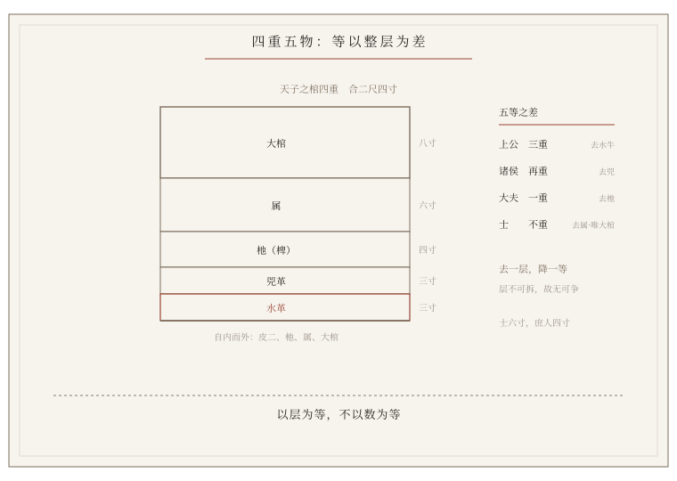

檀弓上 · 三·一百一十二 · 第 315 课
天子之棺四重；水、兕革棺被之，其厚三寸；杝棺一；梓棺二；四者皆周。棺束缩二衡三，衽每束一。柏椁以端长六尺。
说什么事：天子之棺四重，水牛与兕牛之皮为最内一重，各厚三寸；杝棺一，即椑；梓棺二，即属与大棺；四重皆四面围匝。棺不用钉，以皮带束之，纵二道、横三道，每束处以小要连之。椁用柏，材头向内，每段长六尺。
落在哪一层：以「重」与「寸」量尊卑。论「厚薄有等，而等以整层为差」。
为何编在此位：三百零五课已论「君即位而为椑」，此课承之，一次把天子以下的棺制列尽，是本批「尺」中最完整的一张表。
【经】天子之棺四重；水、兕革棺被之，其厚三寸；杝棺一；梓棺二；四者皆周。棺束縮二衡三，衽每束一。柏椁以端長六尺。
【注】尚深邃也。諸公三重，諸侯再重，大夫一重，士不重。／以水牛兕牛之革以為棺被。革各厚三寸，合六寸也。此為一重。／所謂椑棺也。《爾雅》曰：「椴，杝。」／所謂屬與大棺。／周，幣也。凡棺因能濕之物。／衡亦當為橫。衽，今小要。衽或作漆，或作髹。／以端，題湊也。其方蓋一尺。
【疏】此一节论天子诸侯以下棺椁厚薄长短之事。「天子之棺四重」者，尊者尚深邃也；四重者，水牛兕牛皮二物为一重也，又杝为第二重也，又属为第三重也，又大棺为第四重也，四重凡五物也。以次而差之，上公三重，则去水牛，余兕、杝、属、大棺也；侯伯子男再重，又去兕，余杝、属、大棺；大夫一重，又去杝，余属、大棺也；士不重，又去属，唯单用大棺也。天子大棺厚八寸，属六寸，椑四寸，又二皮六寸，合二尺四寸也。上公去水牛之三寸，余兕、椑、属、大棺，则合二尺一寸；诸侯又去兕之三寸，余合一尺八寸也；列国上卿又除椑四寸，余合一尺四寸也；大夫大棺六寸，属四寸，合一尺；士则不重，但大棺六寸耳，故庶人四寸矣。「四者皆周」者，四，四重也；周，币也；谓四重之棺，上下四方，悉周币也；唯椁不周，下有茵，上有杭席故也。「棺束」者，古棺木无钉，故用皮束合之；「缩二」者，缩，纵也，纵束者用二行也；「衡三」者，横束者三行也；「衽每束一」者，衽，小要也，其形两头广，中央小也；既不用钉棺，但先凿棺边及两头合际处作坎形，则以小要连之，令固棺。「柏椁」者，谓为椁用柏也；天子柏，诸侯松，大夫柏，士杂木也。「以端」者，「端」犹头也；积柏材作椁，并葺材头也，故云「以端」；「长六尺」者，天子椁材，每段长六尺而方一尺。
重 层。四重，四层。
被 覆。以革裹木为被。
兕 独角之野牛，皮厚。
杝 音移，椴木。注：「所謂椑棺也。」
属 属棺，次外一层。音烛。
周 注「周，币也」，币当作匝。四面围匝。
缩二衡三 纵二道、横三道。衡，注「当为横」。
衽 小要，连接棺板的小木榫。注「衽或作漆，或作髹」，谓诸本异文。
题凑 椁材之头向内聚凑。
端 材之头。
天子之棺四层：水牛皮与兕牛皮裹在最内，各厚三寸，合六寸为一层；其外杝棺一层；再外梓棺二层，即属与大棺；四层上下四方皆围匝严密。棺不用钉，用皮带束之，纵二道横三道，每道束处嵌一枚小要以连棺板。椁用柏木，材头向内凑聚，每段长六尺、方一尺。
此节是一张递减的表。
四重共五物：水牛皮、兕牛皮（合为一重）、杝、属、大棺。上公三重去水牛，诸侯再重去兕，大夫一重去杝，士不重唯大棺。合厚之数：天子二尺四寸，上公二尺一寸，诸侯一尺八寸，上卿一尺四寸，大夫一尺，士六寸，庶人四寸。
这张表有一个特点：每一等减去的不是「几寸」，是一整层。等级之差不是量的差，是层的差。
这就是礼的算法：以层为等，不以数为等。层是不可分的，数是可分的；用层，则尊卑之间没有中间地带可争。
第一层 「重」不是一个东西，是一个厚度单位 注说得极清楚：「水牛兕牛皮二物为一重，又杝为第二重，又属为第三重，又大棺为第四重，四重凡五物也。」一重可以含两物。可见「重」不是计件，是计厚。古人立名，先立单位，后填实物。
第二层 以整层为差 天子至上公去水牛，上公至诸侯去兕，诸侯至大夫去杝，大夫至士去属。每一等恰去一层，不零敲碎打。
等级的尊严，在于「整层」，不在于「几寸几分」。今人以数字排名次，古人以层排名次。层者，去一层即降一等，无可争议；数者，差一寸犹可争。礼取前者，是取不可争者。
第三层 「周」与「不周」 四者皆周——四重之棺上下四方悉匝。唯椁不周，因为椁下有茵、上有抗席。注又补一句「凡棺因能湿之物」：棺要用能防潮的材，越近尸越要防湿，故水兕之皮最在里，杝次之。
礼在材质上也有次序：不是贵的在里，是能护的在里。
第四层 棺束与衽：一副可以捆紧的构造 古棺无钉，以皮带束之，纵二横三五道，每道以「小要」连之。疏说小要「其形两头广，中央小」，先凿坎，再嵌要，令棺固。汉人呼衽为小要，即今之榫。
这说明棺不是一块整木，是几块板被捆住的。礼的「厚」，一部分来自这种构造——不是靠料大，是靠合得紧。
与今日何干 今人论等级，喜用数字：几星级、几等座、几品阶。此节给的尺是「层」：一档就是一整层，不可拆零。等级若可拆零，则人人争半寸；等级若以整层，则争无从起。此为治序之一法。
| 左 | 右 |
|---|---|
| 四重，五物 | 天子 |
| 三重 | 诸公 |
| 再重 | 诸侯 |
| 一重 | 大夫 |
| 不重，大棺一 | 士 |
| 二尺四寸 | 天子合厚 |
| 六寸 | 士棺厚 |
| 缩二衡三 | 五道束 |
| 衽每束一 | 小要 |
画一处棺作之内，视点略俯。地上并置五样材：最左两张皮革（色深、带毛边），次一段木（色浅、纹理细），次一段木（色中），最右一段大木（色深、厚重）。五样自左向右依次加厚，成一道阶梯。旁置一束皮带，与数枚两头宽中央窄的小木榫。不画人、不写文字。赭色只用在最左两张皮革的边上。
